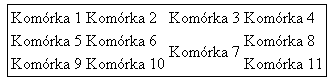
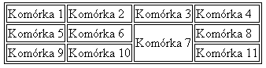
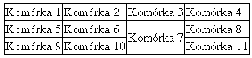
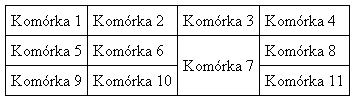
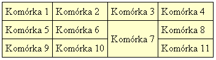

odpowiadające za wygląd tabeli zostały oznaczone jako "deprecated" (krytykowane). Oznacza to, że tworzenie kodu z ich użyciem nie jest zalecane. Tak jest np. z atrybutem border odpowiadającym za obramowanie tabeli. Jak więc stworzyć czytelną i ładną tabelę bez użycia tych atrybutów? Między innymi do takich celów stworzono język CSS. My wykorzystamy tylko nieznaczną część jego właściwości.
Stworzymy z pomocą CSS-a tabelę, której nadamy cienkie obramowanie, a tekst w poszczególnych komórkach będzie oddalony o 5 pikseli od obramowania. Tabeli przypiszemy "bladożółte" tło. Wyróżnimy także jedną z komórek.
Obramowanie tabeli
Zacznijmy od utworzenia miejsca na nasz kod CSS. Do sekcji <head> dodajemy więc znacznik <style>, w którym będziemy definiowali wygląd naszej tabeli:
<style type="text/css">
<!--
-->
</style>
Chcemy nadać całej tabeli obramowanie o grubości 1 piksela. Tworzymy więc selektor #tabela (odwołuje on się do naszej tabeli, której identyfikator określiliśmy w atrybucie id). Przypisujemy do niego właściwość border umożliwiającą określenie grubości, stylu i koloru obramowania ze wszystkich stron elementu.
#tabela {
border: 1px solid black;
}
Pierwszy parametr właściwości border określa grubość obramowania wyrażoną w pikselach, następny to styl obramowania (solid - linia ciągła, dashed - linia przerywana). Ostatni parametr określa kolor obramowania. Efekt tego kodu prezentuje poniższy zrzut:

To nie jest jednak to, o co nam chodzi. Chcemy, aby wszystkie komórki tabeli miały obramowanie. Musimy więc przypisać właściwość border także do selektora td definiującego komórkę tabeli:
#tabela td {
border: 1px solid black;
}
W tym przypadku może dziwić to, po co przed selektorem td znalazł się identyfikator #tabela. To wymusza, aby tylko komórki znajdujące się wewnątrz naszej tabeli były obramowywane. Jeśli pominęlibyśmy pierwszą część selektora, obramowanie byłoby stosowane dla wszystkich komórek we wszystkich tabelach na stronie. A oto efekt:

Widzimy nieładnie wyglądający odstęp pomiędzy obramowaniem poszczególnych komórek. Właściwość CSS o nazwie border-collapse umożliwia połączenie dwóch sąsiadujących ze sobą obramowań w jedno. Powinno się ją przypisać do znacznika
(wszystkie komórki tabeli odziedziczą tę właściwość). Właściwość border-collapse ma dwie możliwe wartości: seperate (domyślna) i collapse. Wartość collapse złączy dwa sąsiadujące ze sobą obramowania. Do selektora #tabela dodajemy więc odpowiedni kod:
#tabela {
border: 1px solid black;
border-collapse: collapse;
}

Wypełnienie komórek
Tabela jest teraz bardziej czytelna, jednak niektórym osobom może przeszkadzać to, że odległość danych w komórce od obramowania jest za mała. Za pomocą cechy padding możemy ustalić wypełnienie komórki (odległość tekstu zawartego w komórce od jej obramowania). Wartość może zostać wyrażona w pikselach. Zwiększmy więc wypełnienie we wszystkich komórkach tabeli, ustawiając je na 5 pikseli (domyślnie 1 piksel). Oto niezbędny kod:
#tabela td {
border: 1px solid black;
padding: 5px;
}
Przypisanie do właściwości padding jednej wartości oznacza, że wypełnienie o wartości 5 pikseli będzie występowało po wszystkich stronach komórki. Nasza tabela ma teraz taki wygląd:

Kolor tła
Pozostała już tylko zmiana koloru tła dla całej tabeli. Do selektora #tabela dopisujemy więc właściwość background-color, której wartością jest nazwa koloru lub jego wartość szesnastkowa (np. #ffc). Kod selektora wygląda teraz tak:
#tabela {
border: 1px solid black;
border-collapse: collapse;
background-color: #ffc;
}
